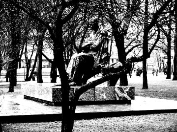
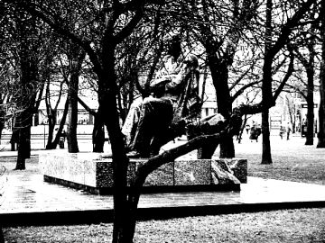
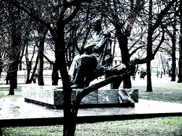

The threshold plug-in works by dividing the image into two parts, dark and light, producing a 2 color image. This is often not the desired result, for some images anti-aliasing is needed, but the threshold plug-in cannot provide that. With a little utilization of the curves plug-in, we get nice results.


On the left you we see the original image that is about to be thresholded, and on the right side we see the result. The default settings for the Threshold plug-in were used (<Image>Image->Colors->Threshold). The resulting image is very blocky and aliased.
 

First duplicate the image layer by going to the layers dialog, making sure the image layer is selected, and clicking the duplicate button (fourth from the left). We can use the original layer for some color tricks later. Now the next thing is to desaturate the image (Image|Colors|Desaturate). This way the colors wont interfere with the fake thresholding. When the layer is grayscale, select the curves plug-in (<Image>Image->Colors->Curves). Now we can play with the value "channel". The image on the left displays the settings used for the example image. The space between the two dots determines how much aa the resulting image will have. The wider the gap, the more grayscale values it will have, and vice versa. The resulting image can be seen on the right.

If you now take the original image layer, move it over the new one (make sure it has an alpha channel), and change its mode to "Color" in the layers dialog, you get nice results displayed above.